Slack App 설정 가이드
새 Slack workspace에 task-management용 Slack app을 만들고 토큰을 발급받아 로컬에 연결하는 과정을, 화면 캡처와 함께 한 단계씩 안내합니다.
전체 흐름
먼저 — 최종적으로 모을 값 4개
아래 4개를 모으는 것이 이 가이드의 목표입니다. 설정이 끝나면 .env.local.md에 입력합니다.
xapp- 로 시작 — 2단계(App-Level Token) 캡처에서 확보xoxb- 로 시작 — 6단계(Install) 캡처에서 확보U…/W… — Slack 프로필 → Copy member ID (캡처 아님)D… — 처음엔 비워두고 slack-doctor --live-open-dm이 자동 resolveSlack App 생성
https://api.slack.com/appsCreate New App → From scratch를 선택합니다.
앱 이름(예: Task Management Demo)을 정하고 설치할 workspace를 선택합니다.
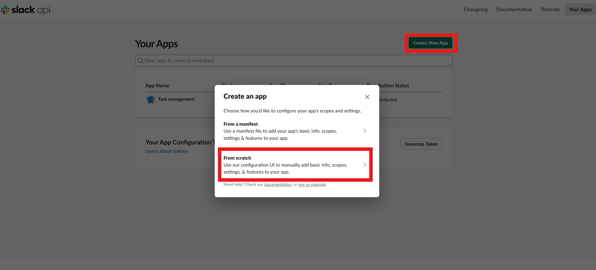
App-Level Token 생성
Settings > Basic Information → 맨 아래 App-Level Tokens2-1. App-Level Tokens → Generate Token and Scopes
Basic Information 페이지를 아래로 내려 App-Level Tokens 섹션에서 Generate Token and Scopes를 누릅니다.
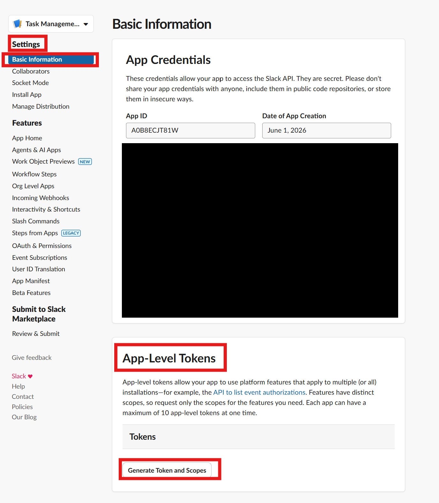
2-2. 토큰 이름 + connections:write scope 추가
토큰 이름(예: task-management-socket)을 입력하고, Add Scope로 connections:write를 추가한 뒤 Generate를 누릅니다.
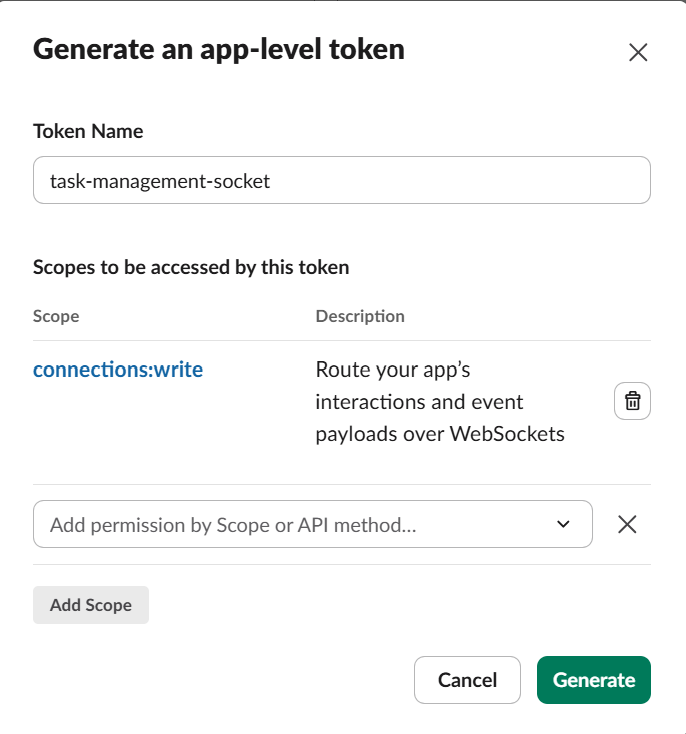
2-3. 토큰 복사 (xapp-)
생성된 토큰을 Copy로 복사합니다. xapp- 로 시작하며, 이 값이 SLACK_APP_TOKEN입니다.
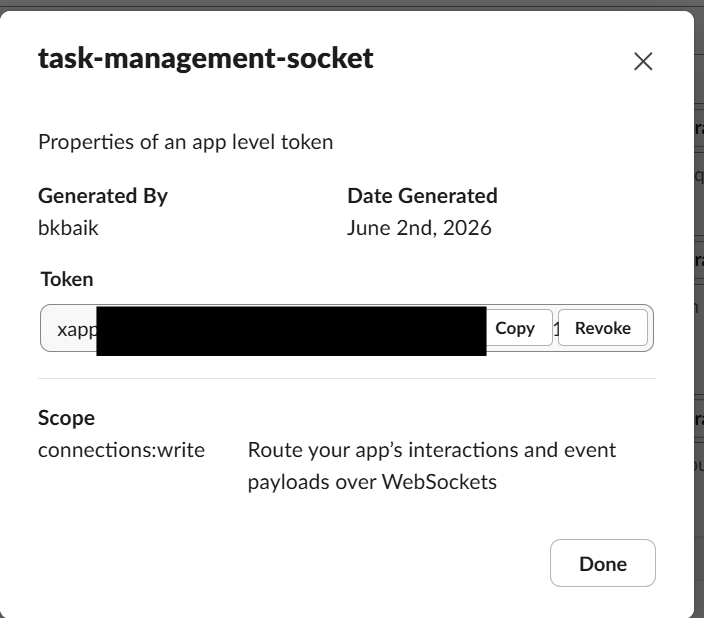
xapp-… 토큰Socket Mode 활성화
Settings > Socket ModeEnable Socket Mode를 켭니다.
토큰을 요구하면 2단계에서 만든 connections:write 토큰을 사용하고 저장합니다.
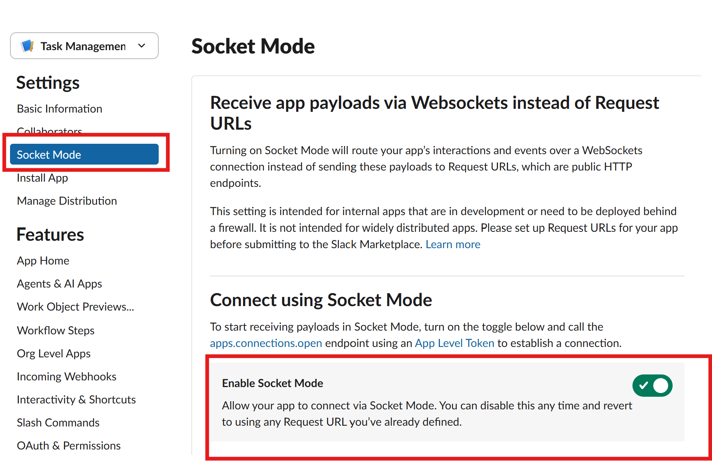
OAuth & Permissions — Bot Scope
Features > OAuth & Permissions → Bot Token ScopesDM 중심 데모에 필요한 필수 bot scope:
| Scope | 이유 |
|---|---|
chat:write | DM·확인·브리핑 메시지를 보냅니다. |
im:history | app DM의 message.im 이벤트와 DM history를 읽습니다. |
im:write | 사용자와 app 사이 DM channel을 엽니다. |
SLACK_PERSONAL_DM_BOT_SCOPES로 고정돼 있고, slack-doctor가 required_bot_scopes로 자동 검증합니다. DM 데모는 더도 덜도 없이 이 3개면 충분합니다.xoxb-)만 사용하며, user token(xoxp-)을 넣으면 slack-doctor가 "must be a bot token"으로 거부합니다. SLACK_USER_ID는 토큰이 아니라 DM 상대(사람)를 식별하는 ID입니다.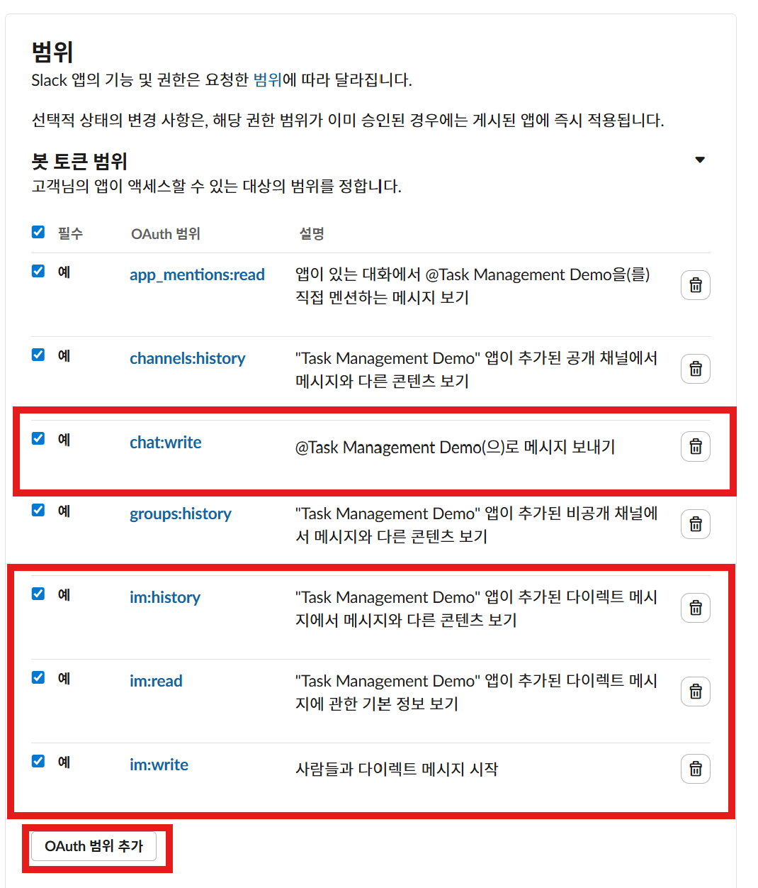
app_mentions:read / channels:history / groups:history를 추가합니다. 처음엔 DM path만 검증하세요.App Home — Home/Messages 탭
Features > App HomeHome Tab과 Messages Tab을 켭니다.
"사용자가 app에 메시지를 보낼 수 있도록" 허용 옵션이 있으면 켭니다.
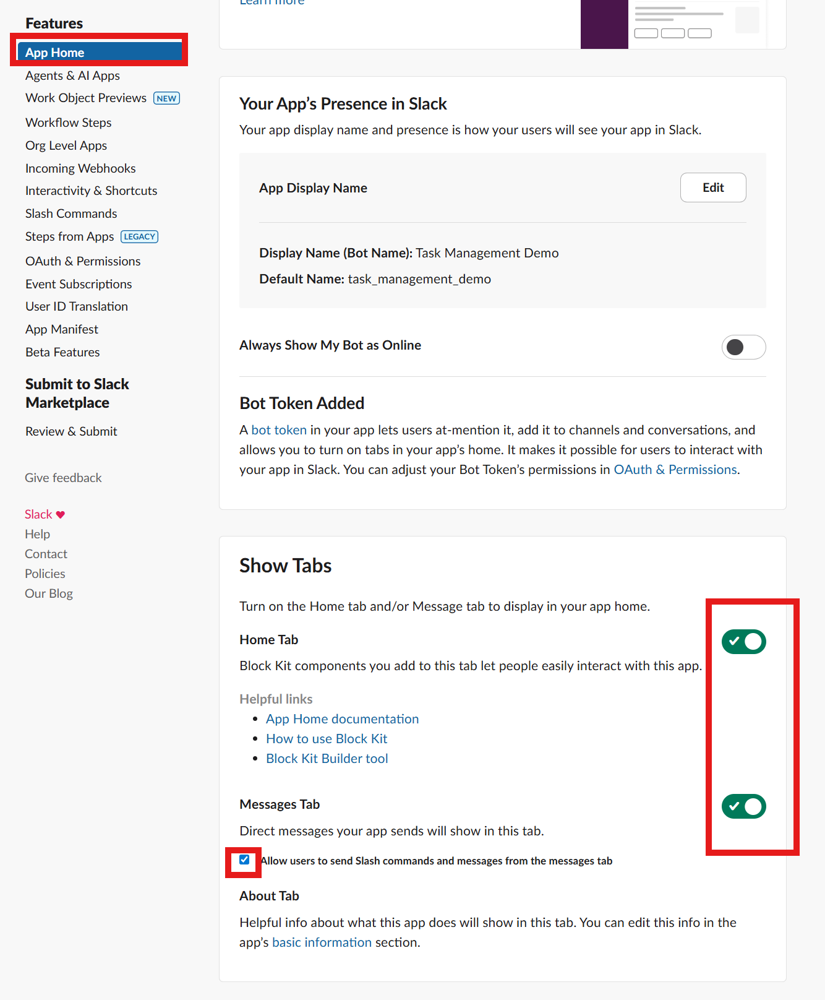
Install to Workspace — Bot Token
Settings > Install App (scope 변경 후엔 Reinstall)6-1. 워크스페이스에 설치
Install App → Install to (워크스페이스) 버튼을 누르고 권한 화면에서 scope를 확인합니다.
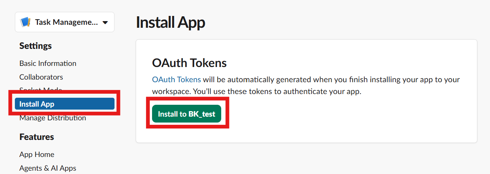
6-2. Bot User OAuth Token 복사 (xoxb-)
설치 후 Bot User OAuth Token을 복사합니다. xoxb- 로 시작하며, 이 값이 SLACK_BOT_TOKEN입니다.
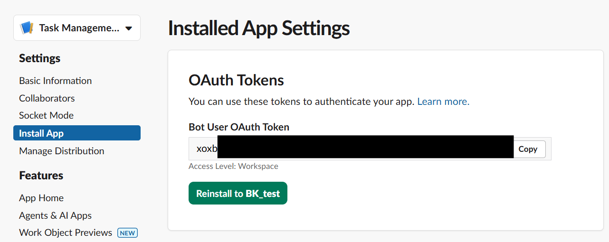
xoxb-… 토큰.env.local을 갱신하세요.Event Subscriptions
Features > Event SubscriptionsEnable Events를 켭니다. (Socket Mode이므로 Request URL은 비워둬도 됩니다.)
Subscribe to bot events에 아래 이벤트를 추가합니다.
| Event | 목적 |
|---|---|
message.im | app DM 메시지를 수신합니다. (필수) |
app_home_opened | Home tab을 열 때 dashboard view를 갱신합니다. |
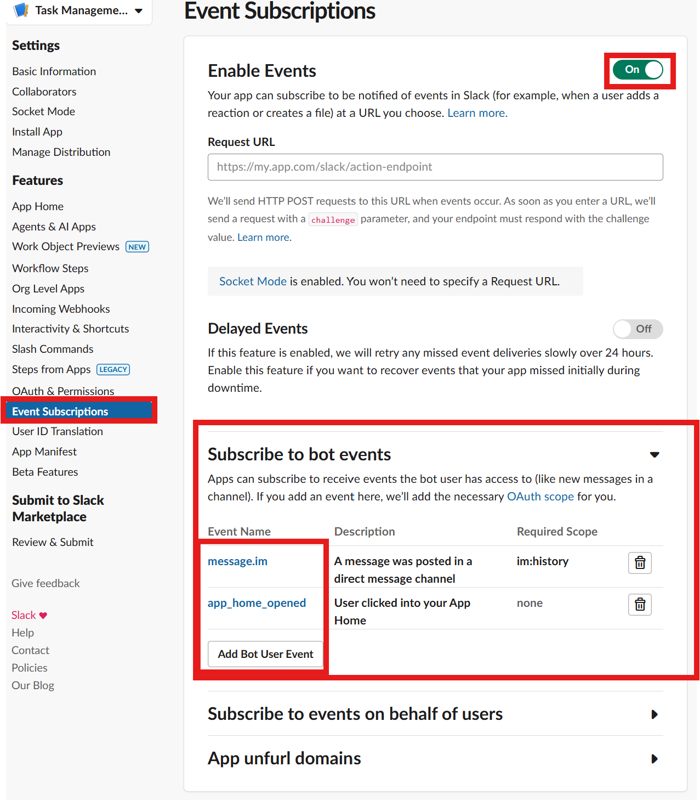
Slack 클라이언트에서 확인
Slack에서 새 app을 열고 Messages 탭에서 테스트 메시지를 보냅니다.
Home 탭을 열어 초기 dashboard/안내가 보이는지 확인합니다.
내일 오전 10시까지 데모 준비 체크리스트 정리해줘

User ID & DM Channel ID 확보
SLACK_USER_ID — 본인 멤버 ID (U…/W…)
Slack에서 본인 프로필을 열고 ⋮ → 멤버 ID 복사를 누릅니다.
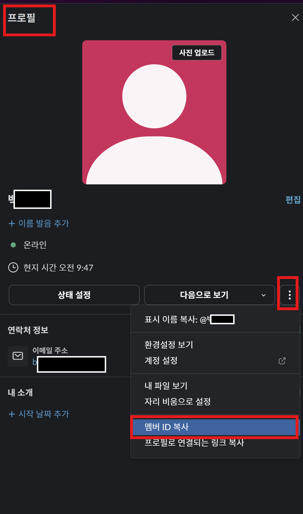
SLACK_DM_CHANNEL_ID — 봇과의 1:1 DM 채널 (D…)
D로 시작합니다. 공개 채널(C…)이나 비공개 채널(G…)의 ID가 아닙니다.SLACK_USER_ID만 채워 두고 doctor를 돌리면 DM 채널이 자동으로 잡힙니다. 출력의 dm_resolution에 나온 D… 값을 SLACK_DM_CHANNEL_ID에 고정하거나, 비워둔 채 매번 자동 resolve 하게 둬도 됩니다.python -X utf8 -m task_management.cli --state .task-management-demo slack-doctor --live-open-dm
수동으로 찾으려면 Slack에서 봇(Task Management)과의 DM을 열고 채널 정보에서 D… 채널 ID를 확인합니다. — #소셜 채널 정보에서 C…를 보신 것과 같은 위치이지만, 대상이 봇과의 DM이어야 합니다.
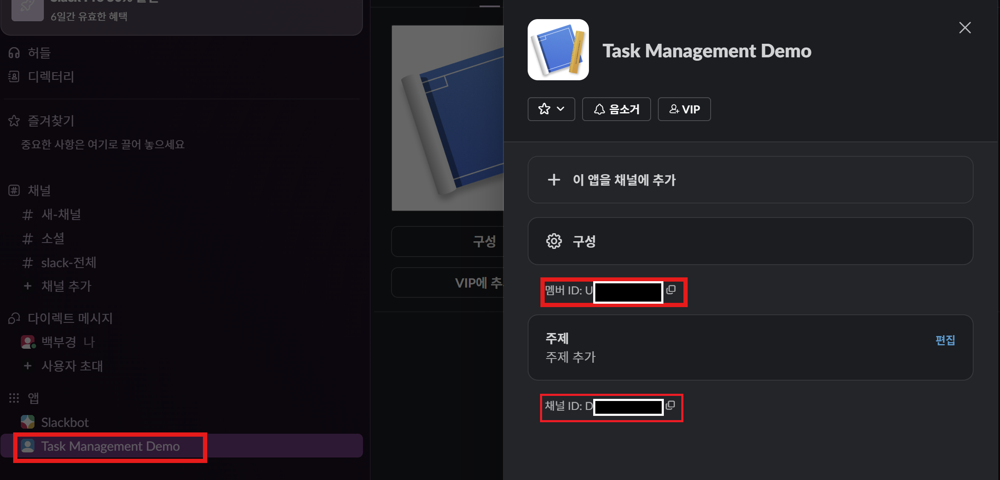
D…)와 봇 멤버 ID(U…)가 보입니다. 토큰만큼 치명적이지는 않지만, 공개 저장소에 올릴 때는 가리는 것이 안전합니다.설정 검증 — 로컬 doctor
repo 루트에서 아래를 실행합니다. CLI가 .env.local과 .env.local.md를 자동 로드합니다.
1) 로컬 설정 파일 만들기
Copy-Item .env.example .env.local Copy-Item ops/local_env_markdown_template.md .env.local.md
.env.local.md에 위 4개 값을 입력합니다. 인스턴스 가드는 두 값을 동일하게 두면 어디서든 동작합니다:
SLACK_BOT_TOKEN= SLACK_APP_TOKEN= SLACK_USER_ID= SLACK_DM_CHANNEL_ID= TASK_MANAGEMENT_INSTANCE_ID=clean-demo TASK_MANAGEMENT_ALLOWED_INSTANCE_ID=clean-demo
2) DM / Web API 설정 확인
python -X utf8 -m task_management.cli --state .task-management-demo slack-doctor --live-open-dm
3) Socket Mode 설정 확인
python -X utf8 -m task_management.cli --state .task-management-demo slack-socket-doctor
최종 체크리스트
- App-Level Token이 있고
connections:writescope를 가진다. SLACK_APP_TOKEN이xapp-로 시작한다.- Socket Mode가 enabled 상태다.
- Bot Token Scopes에
chat:write,im:history,im:write가 있다. - Event Subscriptions에
message.im이 있다. (Home tab이면app_home_opened도) - App Home에서 Messages tab이 켜져 있다.
- app을 install/reinstall 했다.
SLACK_BOT_TOKEN이xoxb-로 시작한다.SLACK_USER_ID가 본인 id(U…/W…)다.slack-doctor --live-open-dm과slack-socket-doctor가 성공한다.- 토큰·DB·JSONL·Slack transcript를 git에 넣지 않았다.
Troubleshooting
SLACK_APP_TOKEN is required
.env.local에 SLACK_APP_TOKEN=xapp-…를 넣었는지 확인합니다.SLACK_BOT_TOKEN must be a bot token
xoxb-)을 복사했는지 확인합니다. user token이 아닙니다.Socket Mode는 연결되는데 DM이 안 들어옴
message.im이 있고, 추가 후 app을 reinstall했는지 확인합니다.app에 DM을 보낼 수 없음
conversations.open이 DM을 못 찾음
SLACK_USER_ID를 본인 U… id로 설정하거나, SLACK_DM_CHANNEL_ID=D…를 직접 지정합니다.